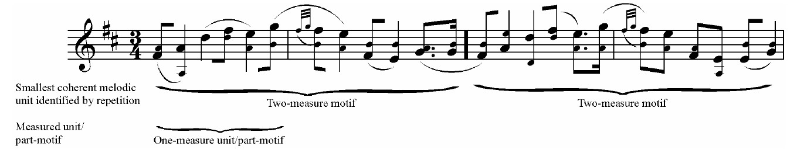
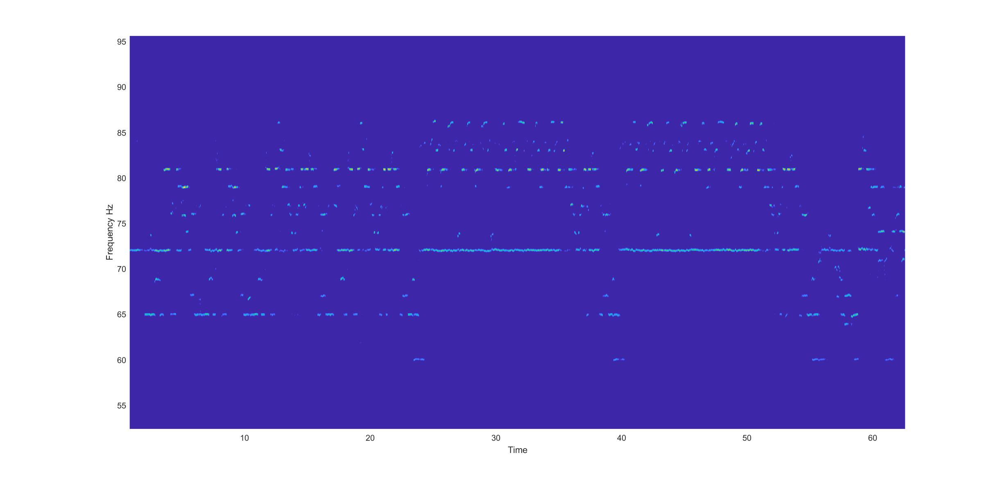
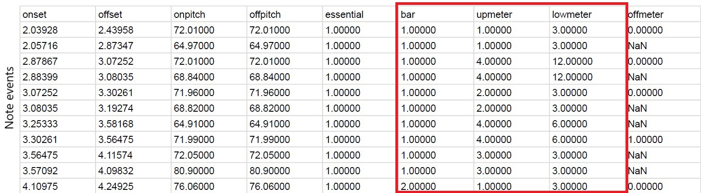
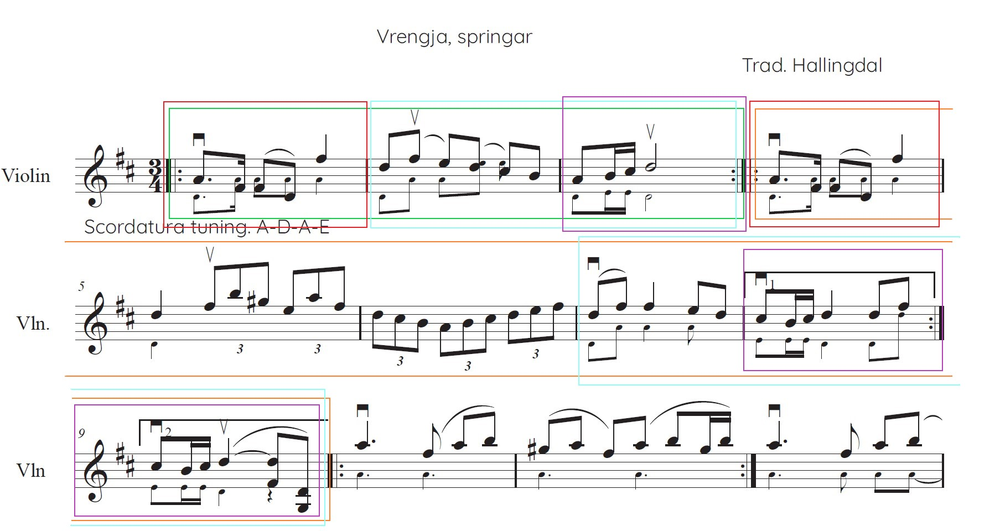

Exploring Hardanger Fiddle Performance Patterns Through Interactive Computational Tools
Agenda
- Research Question - Background - Approach
- Showcase
- Questionnaire
Research Question
How can we design interactive computational tools to explore performance patterns in Hardanger fiddle music?
Research Question
How can we design interactive computational tools to explore performance patterns in Hardanger fiddle music?
Performance patterns in Hardanger fiddle music
Performance patterns in Hardanger fiddle music
- Springar
- triplet meter (3/4)
- Asymmetrical timing patterns.
- long-average-short, long-long-short, short-long-long etc.
Performance patterns in Hardanger fiddle music
Performance patterns in Hardanger fiddle music
Variation in asymmetrical timing patterns are intimatley related to motivic and melodic structures (Johansson, 2017) (Johansson, 2009).
Research Question
How can we design interactive computational tools to explore performance patterns in Hardanger fiddle music?
Research Question
How can we design interactive computational tools to explore performance patterns in Hardanger fiddle music?
Computational tools
- MIRAGE Research Project (Lartillot, 2020)
- Ground-breaking AI system for music analysis.
- Currently researching performance patterns in traditional Scandinavian folk music.
Computational tools
Computational tools
Computational tools
Approach
Prototype 2 interactive computational tools that enable structural and multi-dimensional perspectives on the asymmetrical timing patterns in Hardanger fiddle peformances through interactive and engaging user-interfaces.


Showcase
Design Pillars
- Interactivity
- Structural perspective
- Multi-dimensional analysis
Goal
- Data comprehension
- Explore alternative performance timings.
- Address asymmetrical timing patterns from a structural perspective.
- Increase data accessibility through visualization
Part 1
Interactive ScorePart 2
Timing patterns of repeating sections and phrases


Comments
- Note scaling when adjusting beats.
- Propagate beat adjustments to all repetition instances.
Musical properties of repeating timing patterns
Goal
- Enable multi-dimensional analysis
- Examining property relationships between regions that share similar timing patterns.
- Pitch
- Velocity
- Beat/motivic position


Comments
- Timing pattern formalization (IOI)
- Motivic position
References
- Johansson, M. (2017). Empirical Research on Asymmetrical Rhythms in Scandinavian Folk Music: A Critical Review. Studia Musicologica Norvegica, 43(01), 58–89. https://doi.org/10.18261/issn.1504-2960-2017-01-05
- Johansson, M. (2009). Rhythm into Style: Studying Asymmetrical Grooves in Norwegian Folk Music [PhD]. University of Oslo.
- Lartillot, O. (2020). MIRAGE: A Comprehensive AI-Based System for Advanced Music Analysis. 10. project proposal